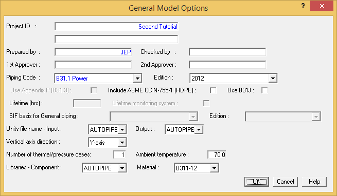
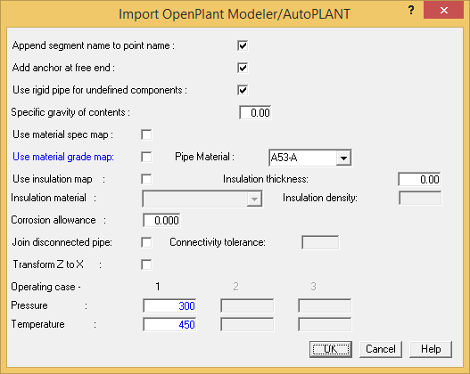
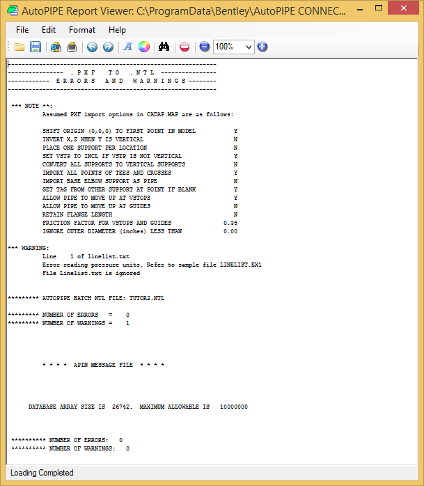
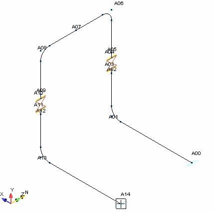

Importing a PXF File
In this section you will learn how to import a model saved in the PXF file format into AutoPIPE. The procedure involves specifying the file type from the Open dialog, defining initial system values and the piping code, then saving the model. Each of these steps is described below.
| Note: |
The model used in this exercise was created using Bentley's AutoPLANT PIPING application. The model was exported from PIPING using the Import/Export module, and saved in the PXF file format. |
1. Select File > Import/Export > Import > OpenPlant Modeler (*.pxf) to display the Import
dialog.
| Note: |
AutoPIPE can import files from a number of different plant design CAD packages on the market. For this tutorial we are using a Bentley AutoPLANT model, but the same principle applies to importing other file types. |
- Double-click on the …\ProgramData\Bentley\AutoPIPE CONNECT v12\Examples directory.
- Double-click on the TUTOR2.PXF file.
- The General Model Options dialog displays as shown in the following figure. From this dialog you can name the system for use in reports, enter designer initials, etc. First, name the model for identification in reports. Type Second Tutorial in the Project ID field, and then enter your initials in the Prepared by field. Of particular note on this dialog is the Piping Code, as this field can determine which options are available in other areas of the system. Tab to the Piping Code and select B31.1 Power from the list and select the 2012 Edition. Note that once a Piping Code is
specified, the remaining fields in the dialog are updated to reflect the defaults for that code. Tab to the Units file name fields and set both the Input and Output units to AutoPIPE {SI}. Next, set the Vertical axis direction to the Y-Axis. When the dialog appears as shown in the following figure, press the OK button to close the dialog.

- The Import AutoPLANT dialog below displays. From this location, select the settings shown below and specify the temperature and pressure loads of the imported system.
- Enter 300 {2.0} in the Pressure field, 450 {250} in the Temperature field.
- Disable the Use material grade map option and select A53-A from the Pipe Material list.
- Press OK.

- One note and one warning message appear when you click Yes to display the errors and warnings messages. The note shows the assumed PXF import options which can be edited in the CADAP.MAP file. The warning message indicates that the file linelist.txt, which contains operating data for every line number, is missing. In this case, AutoPIPE uses the operating data entered above for the entire model.

- Press the close button (the X in the control menu at the upper-right corner of the window) to close the Errors and Warnings window. The imported model now appears within the AutoPIPE modeling window, and you can now perform stress analysis on the system. You can also add components and modify the model as described in the remaining sections of this chapter.
- Select View > Orientation > 180 deg ISO to display the model as shown below.
